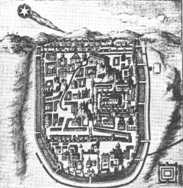

Dessin montrant du 17ème siècle montrant la comète de Halley au-dessus de Jérusalem

Janvier : Le passage de la comète de Halley est évoqué comme un présage de la
chute de Jérusalem Envahie par les romains en 70 par Josephus, un historien juif Cette comète a peut-être inspiré à Saint Mathieu le récit de l'étoile de Béthléem.